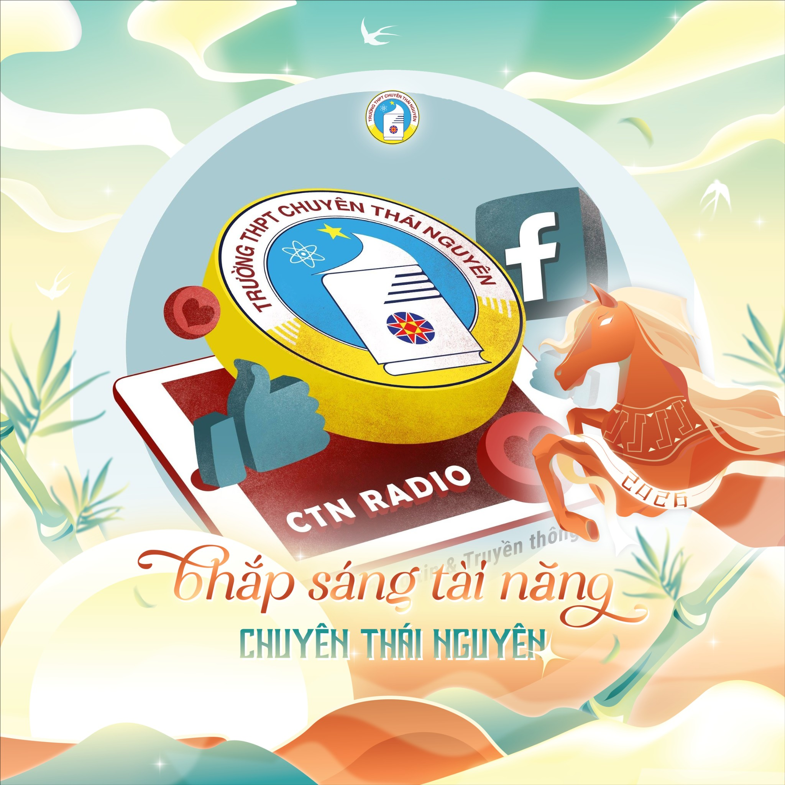

Các Tổ Chức Tiêu Biểu
Khối Truyền thông là nơi cập nhật tin tức nhanh nhất và chia sẻ những câu chuyện ý nghĩa của thầy trò Chuyên Thái Nguyên.

Nắng
CLB do chính các bạn học sinh xây dựng và phát triển. Nắng chuyên thực hiện các bài viết, ấn phẩm khai thác sâu về đời sống, tâm tư và những câu chuyện thú vị của học sinh trong trường.

CTN Radio
Kênh truyền thông chính thức trực thuộc Đoàn trường. Chuyên đưa tin về các sự kiện lớn, các hoạt động của nhà trường và là tiếng nói đại diện cho phong trào thanh niên CTN.
Tin Tức & Sự Kiện Mới
- [SỰ KIỆN HOT] Không khí "Ngày hội Tết CTN 2026" đang nóng lên từng giờ! Các gian hàng ẩm thực và trò chơi dân gian đã sẵn sàng chào đón các bạn vào sáng thứ 7 tuần này.
- [HOẠT ĐỘNG] Cuộc thi "Trang trí Tết lớp em" đã chính thức khởi động. Các chi đoàn hãy nhanh chóng hoàn thiện góc decor Tết để BGK chấm điểm vào chiều mai nhé!
- [THÔNG BÁO] CTN Radio tuyển cộng tác viên cho số phát thanh đặc biệt chào Xuân. Hạn gửi bài viết về hòm thư Đoàn trường: 25/01.